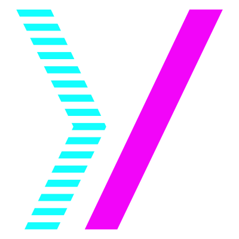

{% comment %}
Esto se va a convertir en el plugin de I18n
{% endcomment %}
{% assign i18n = site.data[site.lang] %}
{% comment %}
Barra de navegación
{% endcomment %}
{{ i18n.index.intro | escape }}
{% for p in i18n.index.description %}
{{ p | markdown }}
{% endfor %}

<
{{ i18n.description.sites }}
{{ i18n.adjetivos | join: '. ' }}
/
{{ i18n.description.for }}
{{ i18n.sujetxs | join: ', ' }}
{{ i18n.adverbios | join: ', '}}
>
{% comment %}
Segmentos explicativos principales, uno por pantalla
{% endcomment %}
{% for section in i18n.index.sections.main %}
{{ i18n[section].symbol | escape }}
{{ i18n[section].title }}
{% for p in i18n[section].description %}
{{ p | markdown }}
{% endfor %}
{% endfor %}
{% comment %}
Segmentos explicativos ocupando una pantalla entera agrupados de a dos.
{% endcomment %}
{% for section in i18n.index.sections.secondary %}
{% assign new_section = forloop.index | modulo: 2 %}
{% comment %}
Abrir la sección si el segmento es impar
{% endcomment %}
{% if new_section == 1 %}
{% endif %}
{{ i18n[section].symbol | escape }}
{{ i18n[section].title }}
{{ i18n[section].subtitle }}
{% for p in i18n[section].description %}
{{ p | markdown }}
{% endfor %}
{% comment %}
Cerrar la sección si el segmento es par
{% endcomment %}
{% if new_section == 0 %}{% endif %}
{% endfor %}